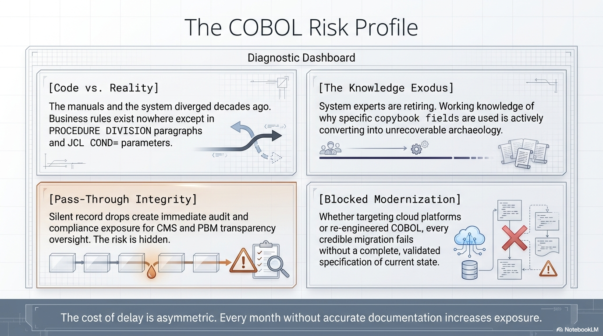

Many organisations with decades of history have built a reputation for flexible, scalable solutions. However, much of the mission-critical batch processing that powers high-stakes financial and operational workflows is rooted in legacy COBOL systems where "the programs are the documentation."
This creates a profound "knowledge crisis." As the original developers retire, the business intent behind high-stakes transaction processing and financial adjudication is effectively locked in a black box. In an environment where "getting it wrong" leads to incorrect outcomes or financial discrepancies, relying on tribal knowledge is an unacceptable risk. Organisations must bridge the gap between decades of proven logic and the need for a modern, transparent architecture.

The Three Challenges
1. The Knowledge Crisis
Every year, more institutional knowledge walks out the door. The cost of understanding these systems only increases with time. Organisations maintain commitment to "best outcomes" — but cannot achieve them when the logic governing every transaction is opaque.
2. The Discovery Lag
Traditional reverse engineering takes 4–6 weeks per component using senior analysts. This "discovery lag" — time wasted simply trying to understand what existing code does — blocks every modernisation initiative before it even begins.
3. The Transparency Gap
Manual analysis often misses "latent bugs" that create unnecessary burdens. Commented-out writes, silent record drops, undefined error handling — these errors get ported to new systems in traditional modernisation. Moving from simply "running a legacy process" to owning the business logic requires surfacing these issues upfront.
The risk of inaction: Every month without documentation increases the cost of eventual modernisation. Every retiring developer takes irreplaceable context with them. The question isn't whether to modernise — it's whether you can afford to wait.
What "Good" Looks Like
The goal is to bridge the gap between decades of proven logic and the need for a modern, transparent architecture:
- Every business rule extracted, documented, and traceable to source
- Every ambiguity identified honestly — not swept under the rug
- Technology choices made after understanding, not before
- Knowledge persisted in a format that outlives any individual developer
- Modernisation that can be validated byte-for-byte before production